Instalação do FreeBSD 14
Introdução (e atualização)
Quando eu comecei esse tutorial mais de 3 anos atrás, essa página ainda tinha um aviso de não recomendação de instalação em UEFI, o Slim ainda era uma boa porta de entrada, portsnap era algo nativo e ntpdate ainda era uma opção de instalação... Muita coisa mudou, e entre elas a minha percepção do que é o FreeBSD.
Então a primeira coisa que eu quero avisar é que o FreeBSD é um sistema operacional basicamente sem automatizações, com alguns padrões de funcionamento bastante antigos e que por (bastante) vezes é extremamente inconveniente!
Diferente do Archlinux ou do Hackintosh, eu não posso recomendar o FreeBSD a nível de usuário final médio, especialmente para uso em desktop! Então antes de mais nada saiba: Este tutorial é para você que quer estudar um pouco a tecnologia do FreeBSD, a oferta de softwares de uso geral é limitadíssima, diversos pacotes simplesmente não tem mantenedores e a configuração necessária para utilização dos ports através de ferramentas auxiliáres é muito mais moroso do que qualquer coisa que você usaria no Archlinux ou até mesmo no Gentoo (é sério), sem contar que mesmo com todo cuidado do mundo a compilação na unha resultará em bugs por diversas vezes, as opções de compilação usada nos pacotes através do packet manager não é nada sã... Então espere ter dor de cabeça! Eu não disse curva de aprendizado difícil, eu disse dor de cabeça pura e simples!
Se você pretende utilizar o sistema e suas ferramentas (como o ZFS) para algum serviço em rede, vai ser até mais rápido e fácil do que setar um Debian, mas se for para desktop e/ou com interface gráfica... Seja bem vindo ao inferno!
AVISO: Para não ter que tirar print de tudo novamente, as imagens serão meramente ilustrativas! Sete as opções baseadas no texto e não nas imagens!
AVISO 2: Esta documentação presume que você é um usuário que entende o básico de sistemas unixlike e como editar arquivos de configuração.
Como proceder:
- Para navegar nos menus utilize as setas (←↑↓→)
- Para alterar o campo de seleção tecle ↹ Tab
- Para selecionar as opções ( * ) nos menus tecle Espaço
- Enter ⏎ quando quiser confirmar a seleção.
Essa é a tela de boas vindas do FreeBSD, tecle Enter ou aguarde o fim da contagem...
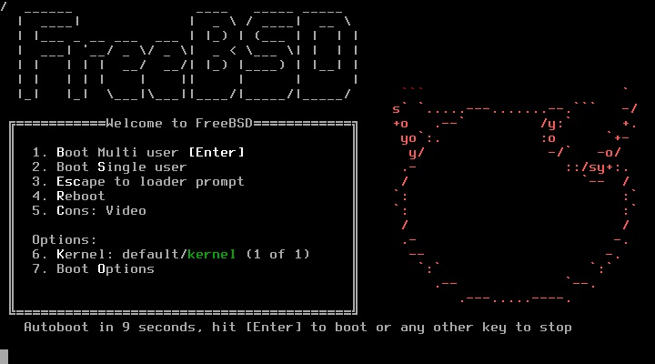Selecione Install para iniciar o processo de instalação:
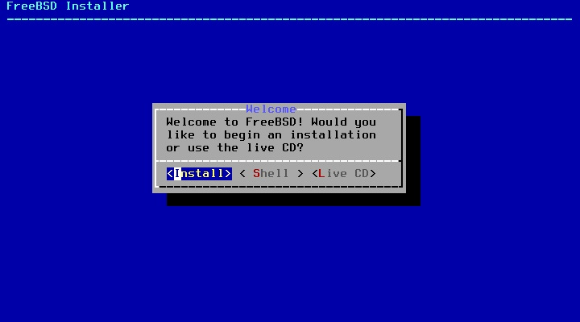Selecione Brazilian (accent keys) e depois Continue with br.kbd keymap:
Se quiser você pode testar o teclado em Test br.kbd keymap.
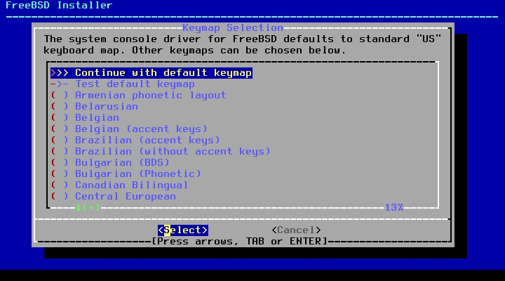Escolha o hostname da máquina:
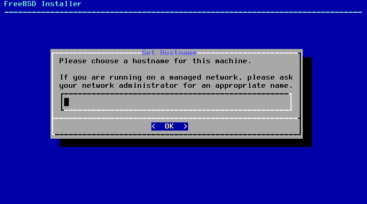Selecione os componentes, recomendo o lib32 (caso queira compatibilidade com binários de 32bits) e o ports (caso queira utilizar o sistema de pacotes por compilação):
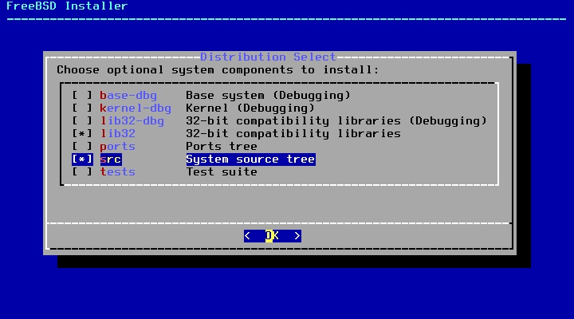Para particionamento a nível de usuário final recomendo Auto (UFS):
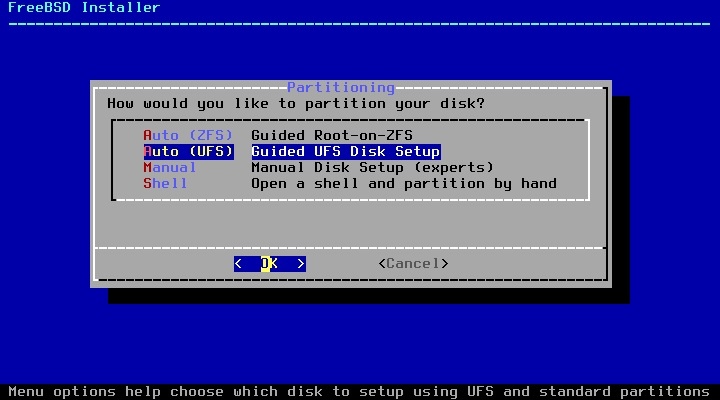Selecione Entire Disk:
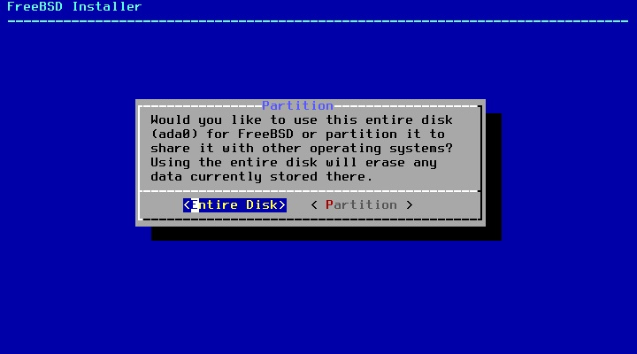Na tabela de partição recomendo MBR para BIOS ou GPT para UEFI:
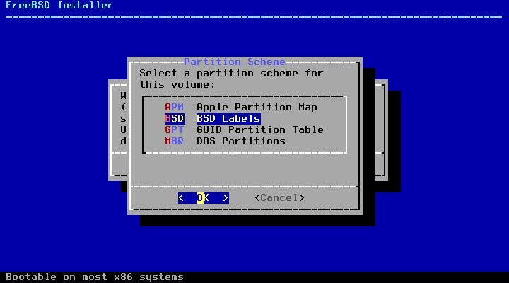Caso esteja de acordo com a tabela de partição selecione Finish:
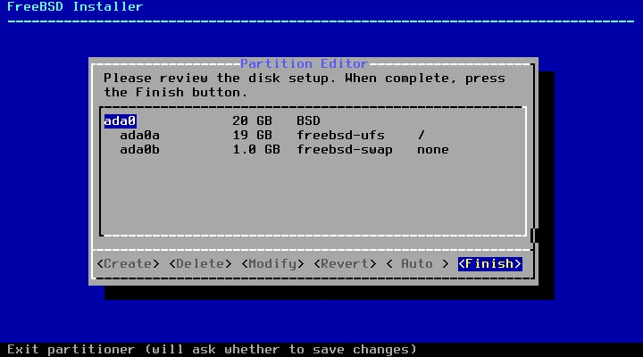Caso esteja de acordo com as alterações em disco selecione Commit:
Alerta: Todos os dados no disco serão perdidos! Tenha a certeza de ter selcionado o disco correto e/ou ter feito backup antes de prosseguir!
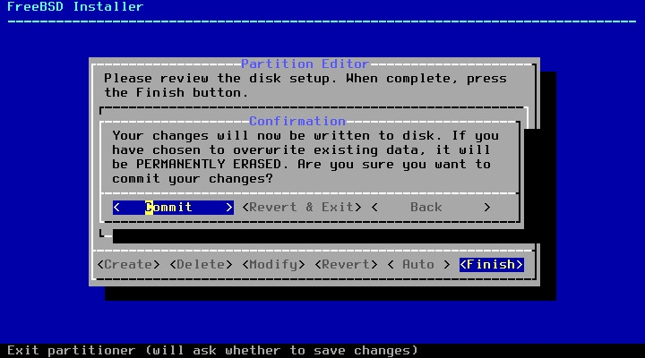Aguarde o fetch...
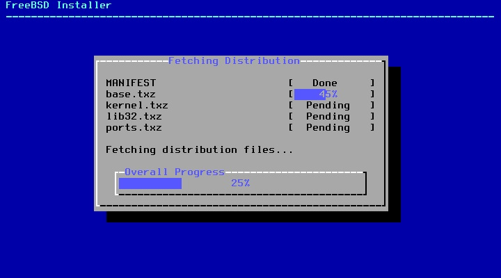E o extract...
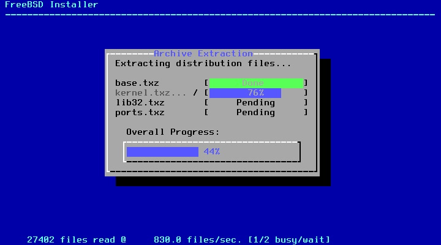Insira a senha de administrador da máquina (root):
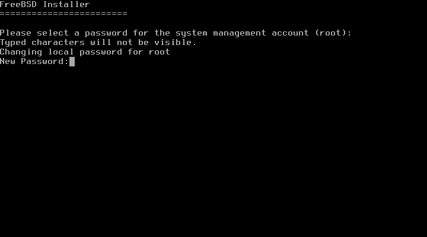Selecione a interface de rede:
AVISO: No meu caso estou instalando numa interface a cabo, caso você esteja utilizando uma interface de rede sem fio você deve selecionar o orgão regulador (FCC, Brazil), a rede e a senha da sua conexão (não obtive sucesso ao conectar no Wifi com caracteres especiais)
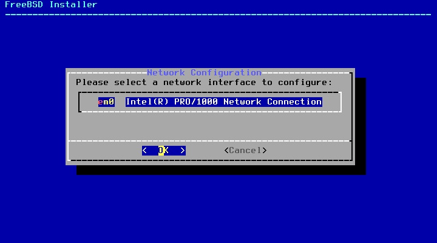Selecione se você quer configurar IPv4 para essa interface (caso esteja em dúvida selecione Yes):
Selecione se você quer configurar DHCP para essa interface (caso esteja em dúvida selecione Yes):
Selecione se você quer configurar IPv6 para essa interface (caso esteja em dúvida selecione No):
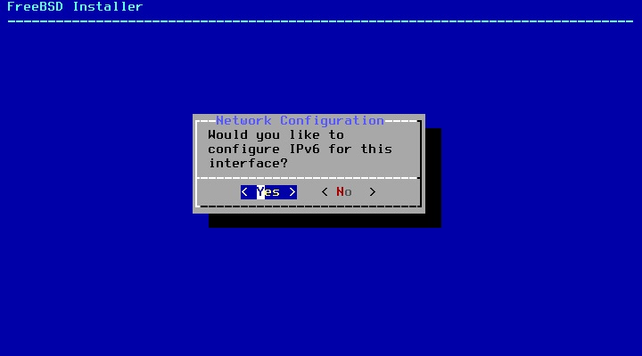Caso deseje você pode configurar o IP de DNS (por padrão será carregado o ip do gateway, caso esteja em dúvida selecione OK):
*Recomendo o uso do OpenDNS (IPs 208.67.222.222/208.67.220.220 para IPv4 e 2620:119:35::35/2620:119:53::53 para IPv6)

Selecione a sua região (America > Brazil > Estado):
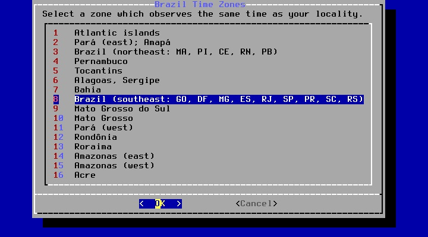Se estiver correto confirme:
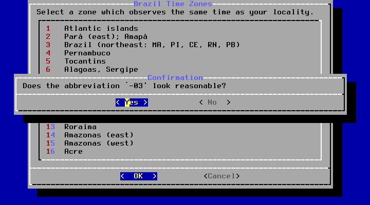Caso a data esteja correta selecione Skip, caso contrário altere em Set Date:
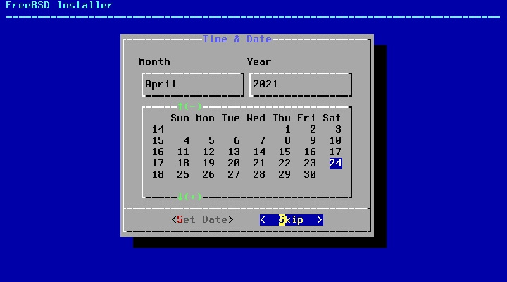Caso a hora esteja correta selecione Skip, caso contrário altere em Set Time:
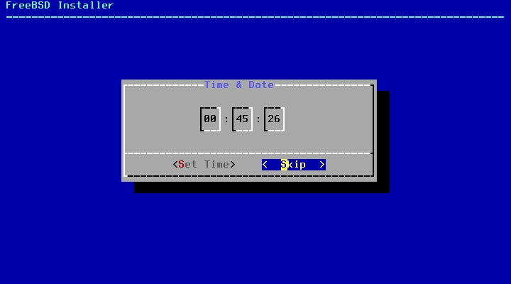Selecione os serviços para serem iniciados no boot, recomendo deixar marcado sshd (se e somente se você deseja se conectar a essa máquina por SSH), moused caso queira utilizar o mouse no console, ntpd e ntpd_sync_on_start, powerd (especialmente em laptops) e dumpdev (útil quase que somente para desenvolvedores):
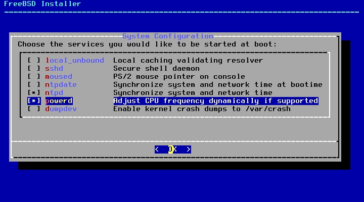Aqui são as opções de enrigecimento de segurança, recomendo marcar todos ou pelo menos read_msgbuf, proc_debug, clear_tmp, disable_syslogd, secure_console, disable_ddtrace:
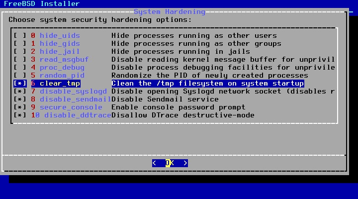Selecione Yes para adicionar o seu usuário no sistema:
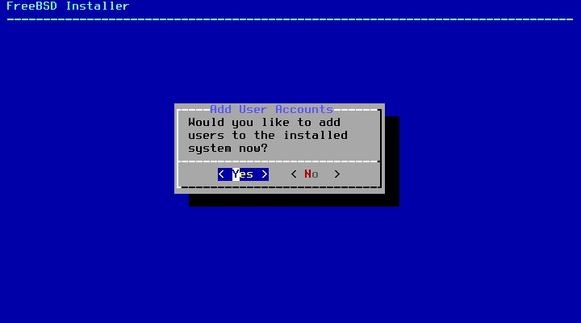Username: insira aqui seu nome de usuário
Full name: apenas tecle Enter
Uid (Leave empty for default): apenas tecle Enter
Login group [seuusuário]: apenas tecle Enter
para acesso administrativo para esse usuário adicione-o ao grupo wheel
para iniciar diretamente a sessão gráfica adicione-o ao grupo video
para permitir montagem de partições e outras funções de configuração adicione-o ao grupo operator
Login group is . Invite into other groups? []: wheel video operator
Login class [default]: apenas tecle Enter
Shell (sh csh tcsh nologin) [sh]: apenas tecle Enter
Home Directory [/home/seuusuário]: apenas tecle Enter
Home Directory Permissions (Leave empty for default): apenas tecle Enter
User password-based authentication? [yes]: apenas tecle Enter
Use an empty password? (yes/no) [no]: apenas tecle Enter
Use a random password? (yes/no) [no]: apenas tecle Enter
Enter password: insira sua senha
Enter password again: confirme sua senha
Lock out the account after creation? (yes/no) [no]: apenas tecle Enter
Ok? (yes/no): yes
Add another user? (yes/no): no
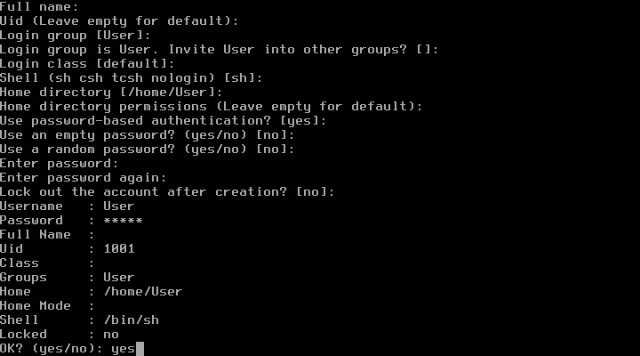
Selecione Exit (a menos que queira alterar algo):

Selecione No:
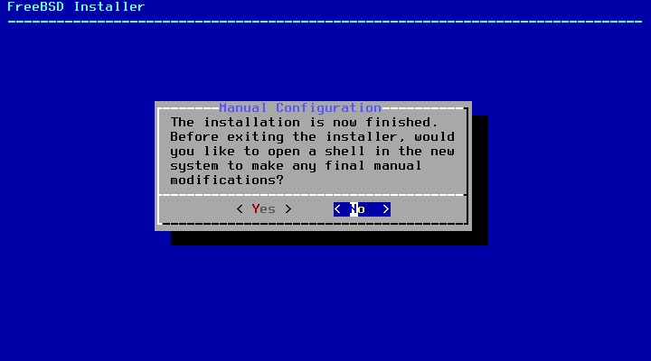Selecione Reboot para concluir a instalação e reiniciar a máquina para o sistema instalado.
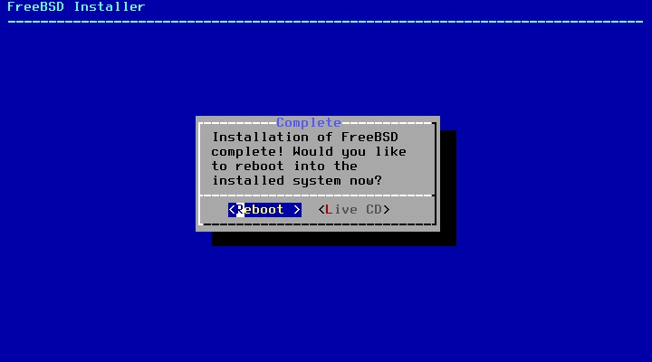Pós Instalação
Assim que o sistema iniciar logue na conta de administrador: (login: root - senha: senha que você digitou para acesso administrativo)
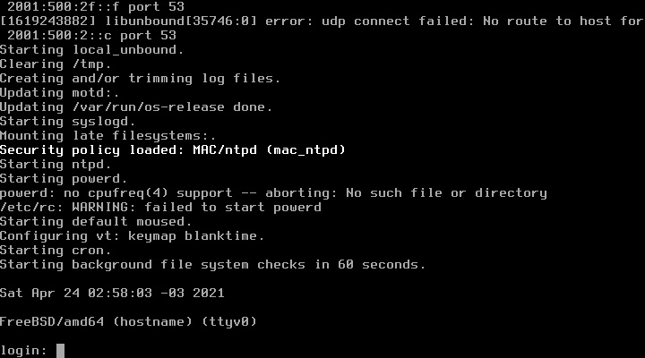Assim que logado na conta de root vamos começar a preparar o sistema...
Opcional: Caso você tenha problemas para utilizar o terminal devido ao tamanho da fonte, utilize o comando abaixo para selecionar uma outra fonte:
vidfont
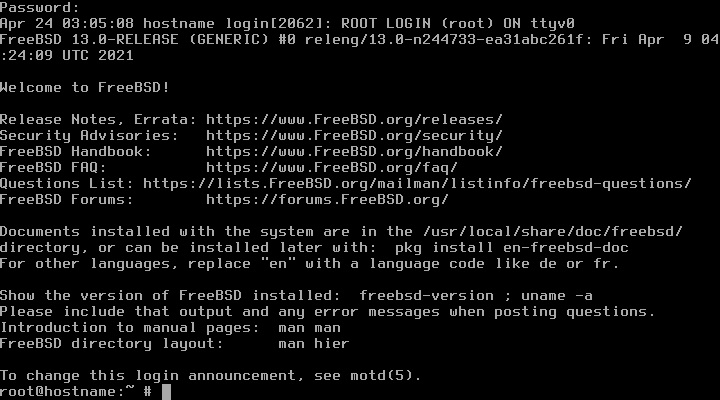
Para atualizar os patches de segurança do sistema use os comandos:
freebsd-update fetch
freebsd-update install
Para atualizar os pacotes insira o comando:
pkg update && upgrade
Do you want to fetch and install it now?: y
Se aparecer:
Your packages are up to date
Significa que seu sistema já está devidamente atualizado.
Lembre-se! Você pode utilizar o comando abaixo para remover pacotes específicos:
pkg remove nomedopacote
E pode usar o comando abaixo para remover pacotes órfãos:
pkg autoremove
Configuração para Usuário Final
Elevação de privilégio com o Doas
Se você seguiu corretamente os passos até aqui o seu usuário faz parte do grupo wheel, para elevação de privilégio instale o doas com o comando:
pkg install doas
O doas precisa de uma simples configuração para elevação de privilégio, edite o arquivo /usr/local/etc/doas.conf e insira a linha:
permit persist keepenv :wheel
Caso você queira a elevaçao de privilégios sem inserção de senha (não recomendado) utilize a linha:
permit nopass keepenv :wheel
Instalação de Desktop Environment
Se você está lendo isso as chances são que você não vai utilizar o FreeBSD como sistema de servidor. O FreeBSD pode ser utilizado normalmente como um sistema para usuário final, entretanto, Desktop Environments (ambientes gráficos) geralmente não são tão polidos e atualizados no FreeBSD tanto quanto são no universo Linux. Se você utilizar os fóruns vai ver que grande parte dos usuários prefere utilizar apenas um gerenciador de janelas (window manager) e não um ambiente completo (como o Cinnamon, por exemplo). Os recém chegados do Linux provavelmente instalam algum port de XFCE, MATE ou KDE, mas saiba que alguns ambientes aqui podem (não quer dizer que vão) ser problemáticos (ou simplesmente depreciados).
Isso não significa que você não pode ter uma excelente experiência utilizando o FreeBSD como daily driver, mas como esses ambientes recebem relativamente menos suporte e tem um público menor por aqui você não pode se der ao luxo de achar que pode simplesmente instalar um ambiente gráfico e dar por encerrado o seu dia. O FreeBSD separa muito bem o espaço de sistema e espaço de usuário e, independente do ambiente que você utilize você ainda terá que acessar uma camada mais íntima do sistema.
Instalação do Xorg
A primeira coisa que precisamos para instalar um ambiente gráfico é o Xorg, para instala-lo utilize o comando:
pkg install xorg
Proceed with this action? y
Instalação dos drivers de vídeo
NVIDIA
Caso você possua uma placa nvidia mais recente utilize o comando abaixo para instalar os drivers e aplicações necessárias:
pkg install nvidia-driver nvidia-settings nvidia-xconfig
Para setar o carregamento do driver utilize o comando:
sysrc kld_list+=nvidia-modeset
O Driver gráfico pode ser especificado no diretório /usr/local/etc/X11/xorg.conf.d/. Você pode criar o arquivo em /usr/local/etc/X11/xorg.conf.d/20-nvidia.conf seguindo o exemplo abaixo...
Section "Device"
Identifier "Card0"
Driver "nvidia"
EndSection
OU utilizar este outro comando para que a configuração seja feita automaticamente:
nvidia-xconfig
AMD
Caso você possua uma placa ou vídeo integrado AMD utilize o comando abaixo para instalar os drivers e aplicações necessárias:
pkg install drm-kmod
Para setar o carregamento do driver para placas pós HD7000 ou Tahiti utilize o comando:
sysrc kld_list+=amdgpu
Para setar o carregamento do driver para placas pré HD7000 ou Tahiti utilize o comando:
sysrc kld_list+=radeonkms
O Driver gráfico pode ser especificado no diretório /usr/local/etc/X11/xorg.conf.d/. Você pode criar o arquivo em /usr/local/etc/X11/xorg.conf.d/20-nvidia.conf seguindo o exemplo abaixo:
Section "Device"
Identifier "Card0"
Driver "radeon"
EndSection
Intel
Caso você possua uma placa ou vídeo integrado Intel utilize o comando:
pkg install drm-kmod libva-intel-driver mesa-libs mesa-dri
Para setar o carregamento do driver utilize o comando:
sysrc kld_list+=i915kms
O Driver gráfico pode ser especificado no diretório /usr/local/etc/X11/xorg.conf.d/. Você pode criar o arquivo em /usr/local/etc/X11/xorg.conf.d/20-nvidia.conf seguindo o exemplo abaixo:
Section "Device"
Identifier "Card0"
Driver "intel"
EndSection
Caso deseje aceleração de hardware instale também os pacotes conforme o comando abaixo:
pkg install libva-intel-driver mesa-libs mesa-dri
Configurando o Xorg
Teclado em ABNT2
No diretório /usr/local/etc/X11/xorg.conf.d/00-keyboard.conf insira:
Section "InputClass"
Identifier "Keyboard1"
MatchIsKeyboard "on"
Option "XkbLayout" "br"
Option "XkbModel" "abnt2"
EndSectionHabilitando som
Para habilitar o som basta carregar os devidos drivers, supondo que você precise do módulo para sistemas baseados em Intel adicione a linha abaixo em /etc/rc.conf:
snd_hda_load="YES"
LOCALE
Ok, esta é uma parte simples de fazer mas que quase sempre vai dar problemas, eu já pesquisei por dias para entender exatamente o que ocorre mas verdadeiramente ainda não consigo compreender então vamos por partes.
O resumo da opera é que o FreeBSD trabalha com login classes, então você cria uma classe de login, deixa as limitações e opções de ambiente na classe e o usuário que faz parte daquela classe herda essas informações automaticamente, e isso é extremamente útil e interessante e... As vezes simplesmente não funciona! É... É isso.
De qualquer forma o procedimento é sempre o mesmo:
- Logar na conta de administrador sem manter ambiente (não utilize elevação de privilégios com o DOAS para fazer isso)
- Editar o arquivo /etc/login.conf
- Criar o banco de dados com cap_mkdb /etc/login.conf
É isso... Mas pode acontecer de simplesmente não funcionar (que saudade do locale-gen 😭) então vamos lá:
(Se já não tiver logado) logue como root sem preservar ambiente com o comando:
su -
Insira a senha e edite o arquivo /etc/login.conf:
nano /etc/login.conf
Nesse arquivo no final da sessão default:\ você vai encontrar uma linha como a de baixo:
:charset=UTF-8:\
:lang=C.UTF-8:
Edite para que fique como no exemplo abaixo:
:charset=UTF-8:\
:lang=pt_BR.UTF-8:
BONUS: Caso queira remover aquela mensagem chata de login basta setar o argumento :welcome=/var/run/motd:\ para :welcome=/dev/null:\.
Agora gere o banco com o comando:
cap_mkdb /etc/login.conf
É isso, reinicie o computador, logue novamente na sua conta de usuário comum (não root) e execute o comando abaixo para verificar o locale:
locale
Verifique se retorna:
LANG=pt_BR.UTF-8
LC_CTYPE="pt_BR.UTF-8"
LC_COLLATE="pt_BR.UTF-8"
LC_TIME="pt_BR.UTF-8"
LC_NUMERIC="pt_BR.UTF-8"
LC_MONETARY="pt_BR.UTF-8"
LC_MESSAGES="pt_BR.UTF-8"
LC_ALL=
Se retornar está tudo certo, senão você vai ter que fazer o procedimento para o seu usuário.
Logue na sua conta de usuário, edite o arquivo .login_conf, altere como no exemplo acima e execute:
cap_mkdb .login_conf
Reinicie o computador, relogue na sua conta e verifique o locale.
Instalação dos pacotes de Ambiente Gráfico
Para instalação do KDE
Para instalar o ambiente gráfico KDE Plasma e suas aplicações use o comando:
pkg install kde5
Se prefere uma instalação mínima utilize o comando abaixo:
pkg install plasma5-plasma
Lembrando que a instalação mínima não possui terminal nativo!
Como o KDE utiliza o D-BUS, ative o serviço com o comando abaixo:
sysrc dbus_enable="YES"
Se e somente se você vai permanecer no KDE aumente o tamanho dos buffers adicionando as linhas abaixo em /etc/sysctl.conf:
sysctl net.local.stream.recvspace=65536
sysctl net.local.stream.sendspace=65536
Para ser inicializado o KDE Plasma utiliza por padrão o SDDM, instale o SSDM com o comando abaixo:
pkg install sddm
E habilite o serviço com o comando abaixo:
sysrc sddm_enable="YES"
Sete as opções de localização do SDDM com o comando abaixo:
sysrc sddm_lang="pt_BR"
Caso queira iniciar a interface manualmente com o comando startx você pode adicionar o argumento como no exemplo abaixo no arquivo .xinitrc:
echo "exec dbus-launch --exit-with-x11 ck-launch-session startplasma-x11" > ~/.xinitrc
Para instalação do Gnome
Para instalar o ambiente gráfico Gnome e suas aplicações use o comando:
pkg install gnome
Se prefere uma instalação mínima utilize o comando abaixo:
pkg install gnome-lite
O Gnome requer que o /proc esteja montado, adicione a segunda linha seguindo o exemplo abaixo em /etc/fstab para montagem automática:
# Device
Mountpoint
FStype
Options
Dump
Pass#
proc
/proc
procfs
rw
0
0
Como o Gnome utiliza o D-BUS, ative o serviço com o comando abaixo:
sysrc dbus_enable="YES"
Por padrão o Gnome utiliza um Display Manager próprio (GDM), para habilitar o GDM use o comando abaixo:
sysrc gdm_enable="YES"
Caso queira iniciar a interface manualmente com o comando startx você pode adicionar o argumento como no exemplo abaixo no arquivo .xinitrc:
echo "exec gnome-session" > ~/.xinitrc
Para instalação do XFCE
Para instalar o ambiente gráfico XFCE e suas aplicações use o comando:
pkg install xfce
O XFCE requer que o /proc esteja montado, adicione a segunda linha seguindo o exemplo abaixo em /etc/fstab para montagem automática:
# Device
Mountpoint
FStype
Options
Dump
Pass#
proc
/proc
procfs
rw
0
0
Como o XFCE utiliza o D-BUS, ative o serviço com o comando abaixo:
sysrc dbus_enable="YES"
Para ser inicializado o XFCE por padrão utiliza o LightDM, instale o LightDM com o comando abaixo:
pkg install lightdm lightdm-gtk-greeter lightdm-gtk-greeter-settings
E habilite o serviço com o comando abaixo:
sysrc lightdm_enable="YES"
Caso queira iniciar a interface manualmente com o comando startx você pode adicionar o argumento como no exemplo abaixo no arquivo .xinitrc:
echo '. /usr/local/etc/xdg/xfce4/xinitrc' > ~/.xinitrc
Para instalação do MATE
Para instalar o ambiente gráfico MATE e suas aplicações use o comando:
pkg install mate
Se prefere uma instalação mínima utilize o comando abaixo:
pkg install mate-base
O MATE requer que o /proc esteja montado, adicione a segunda linha seguindo o exemplo abaixo em /etc/fstab para montagem automática:
# Device
Mountpoint
FStype
Options
Dump
Pass#
proc
/proc
procfs
rw
0
0
Como o MATE utiliza o D-BUS, ative o serviço com o comando abaixo:
sysrc dbus_enable="YES"
Para ser inicializado o MATE por padrão utiliza o LightDM, instale o LightDM com o comando abaixo:
pkg install lightdm lightdm-gtk-greeter lightdm-gtk-greeter-settings
E habilite o serviço com o comando abaixo:
sysrc lightdm_enable="YES"
Caso queira iniciar a interface manualmente com o comando startx você pode adicionar o argumento como no exemplo abaixo no arquivo .xinitrc:
echo "exec dbus-launch --exit-with-x11 ck-launch-session mate-session" > ~/.xinitrc
Para instalação do Cinnamon
Para instalar o ambiente gráfico Cinnamon e suas aplicações use o comando:
pkg install cinnamon
O Cinnamon requer que o /proc esteja montado, adicione a segunda linha seguindo o exemplo abaixo em /etc/fstab para montagem automática:
# Device
Mountpoint
FStype
Options
Dump
Pass#
proc
/proc
procfs
rw
0
0
Como o Cinnamon utiliza o D-BUS, ative o serviço com o comando abaixo:
sysrc dbus_enable="YES"
Para ser inicializado o Cinnamon por padrão utiliza o LightDM, instale o LightDM com o comando abaixo:
pkg install lightdm lightdm-gtk-greeter lightdm-gtk-greeter-settings
E habilite o serviço com o comando abaixo:
sysrc lightdm_enable="YES"
Caso queira iniciar a interface manualmente com o comando startx você pode adicionar o argumento como no exemplo abaixo no arquivo .xinitrc:
echo "exec dbus-launch --exit-with-x11 ck-launch-session cinnamon-session" > ~/.xinitrc
Para instalação do LXQT
Para instalar o ambiente gráfico LXQT e suas aplicações use o comando:
pkg install lxqt
O LXQT requer que o /proc esteja montado, adicione a segunda linha seguindo o exemplo abaixo em /etc/fstab para montagem automática:
# Device
Mountpoint
FStype
Options
Dump
Pass#
proc
/proc
procfs
rw
0
0
Como o LXQT utiliza o D-BUS, ative o serviço com o comando abaixo:
sysrc dbus_enable="YES"
Para ser inicializado o LXQT por padrão utiliza o SDDM, instale o SDDM com o comando abaixo:
pkg install sddm
E habilite o serviço com o comando abaixo:
sysrc sddm_enable="YES"
Sete as opções de localização do SDDM com o comando abaixo:
sysrc sddm_lang="pt_BR"
Caso queira iniciar a interface manualmente com o comando startx você pode adicionar o argumento como no exemplo abaixo no arquivo .xinitrc:
echo "exec dbus-launch --exit-with-x11 ck-launch-session startlxqt" > ~/.xinitrc
Corrigindo diretórios
Algumas interfaces ao serem instaladas não criam automaticamente a estrutura para as pastas de usuário (Imagens, Músicas, Vídeos etc), para resolver isso instale o pacote xdg-user-dirs com o comando abaixo:
pkg install xdg-user-dirs
Logado como o seu usuário, use o comando abaixo para atualizar os diretórios:
xdg-user-dirs-update
Configurando montagem automática de sistemas de arquivo
O FreeBSD preserva ferrenhamente os seus trejeitos do velho Unix, ainda se comporta como um sistema voltado para o ambiente de servidores... Enão se você quiser utilizá-lo para desktop é necessário configurar um script para montagem de dispositivos pois ele não vai fazer isso automaticamente para você.
O primeiro passo é instalar o suporte aos sistemas de arquivo desejados e o programa automount, para isso você pode instalar os pacotes:
fusefs-exfat Para suporte para formatos FAT
fusefs-ntfs Para suporte para NTFS
fusefs-ext2 Para suporte para EXT
fusefs-hfsfuse Para suporte para HFS
fusefs-jmtpfs Para suporte para MTP
Nesse caso vamos supor que quero utilizar um pendrive em NTFS, o comando para instalação seria:
pkg install automount fusefs-ntfs
Agora temos que setar a configuração do automount que está em /usr/local/etc/automount.conf:
USERUMOUNT=YES
ATIME=NO
FM="comando para chamar o seu file manager"
USER=seu username
ENCODING=pt_BR.UTF-8
CODEPAGE=850
* Este CODEPAGE=850 está baseado no valor padrão do mkfs.fat
Agora vamos editar o /etc/sysctl.conf para possibilitar que os usuários do grupo operator possam montar sistemas de arquivo, para isso inclua a linha abaixo:
vfs.usermount=1
Agora vamos carregar o módulo FUSE durante o boot, para isso acesse o arquivo /boot/loader.conf e adicione a linha:
fusefs_load="YES"
Para carregar o serviço edite o arquivo /etc/rc.conf e adicione a linha:
fuse_enable="YES"
Corrigindo Som
Ao utilizar ambientes gráficos completos no FreeBSD é bem provavel que ocasionalmente você enfrente alguma espécide de problema com relação a desligamento de dispositivos, perda de sincronia e por aí vai. Para resolver esses problemas o interessante é que você entenda um pouco das alternativas "por baixo do capô" para resolver o seu problema de uma vez por todas.
Problema número 1: Erro na escolha de dispositivo padrão
Para verificar os dispositivos de áudio execute o comando:
cat /dev/sndstat
Vai retornar uma lista mais ou menos assim:
Installed devices:
pcm0: NVIDIA (0x0000) (HDMI/DP 8ch) (play) default
pcm1: NVIDIA (0x0000) (HDMI/DP 8ch) (play)
pcm2: Realtek ALC887 (Rear Analog) (play/rec)
pcm3: Realtek ALC887 (Front Analog) (play/rec)
No devices installed from userspace.
Perceba que o dispositivo indicado como padrão é o pcm0, vamos supor que o desejado seja a saída traseira do pcm2, para setar o dispositivo padrão utilize o comando sysctl hw.snd.default_unit="número da unidade" como no código abaixo:
sysctl hw.snd.default_unit=2
Problema número 2: Retorno do microfone
Então você instalou o sistema e está se ouvindo? Este é um problema bastante comum porém bem fácil de resolver, geralmente o canal mix está fica ativo por padrão, existe um utilitário chamado mixer (que original... 🙄) para resolver esse tipo de coisa no FreeBSD, utilize o comando:
mixer
E você vai ter um retorno mais ou menos assim:
pcm2:mixer: Realtek ALC887 (Rear Analog) on hdaa1 (play/rec) (default)
vol = 1.00:1.00 pbk
pcm = 1.00:1.00 pbk
speaker = 1.00:1.00 rec
line = 1.00:1.00 rec
mic = 1.00:1.00 rec src
mix = 1.00:1.00 rec
rec = 1.00:1.00 pbk
igain = 1.00:1.00 pbk
ogain = 1.00:1.00 pbk
No caso acima é possível verificar que o canal mix está no máximo (1.00:1.00), para alterar qualquer canal basta utilizar o comando mixer conexão .volume="valor do volume", se for pra setar o mix para 0 basta utilizar o comando:
mixer mix.volume=0
Adendo: Opções gráficas
Caso você não queira utilizar o terminal para fazer essas alterações sempre que possível você pode usar aplicações como audio/dsbmixer (baseado em QT) ou audio/gtk-mixer (baseado em GTK).
Navegador e Suíte office
Se você vai usar o FreeBSD como sistema Desktop, navegador e suíte office são essenciais! Para instalar o Firefox e o LibreOffice (com suporte a Português do Brasil) basta usar o comando:
pkg install firefox-esr libreoffice pt_BR-libreoffice
Para alterar o idioma da interface no LibreOffice vá em Ferramentas -> Opções -> Configurações de idioma -> Idiomas. Selecione “Português (Brasil)” na caixa de lista “Interface do usuário” e clique em OK. Reinicie o LibreOffice para que as alterações tenham efeito
Para alterar o idioma da interface do Firefox acesse o menu e selecione Configurações -> Geral -> Idioma -> Definir alternativa e caso Português (BR) não esteja na lista clique em "Selecione um idioma para adicionar", escolha Português (BR), coloque ele como o primeiro da lista e reinicie o Firefox para que as alterações tenham efeito.
Criação de swapfile
O FreeBSD utiliza a memória swap de uma forma bem diferente do Linux, e essa diferença vai desde volume utilizado até eficiência e políticas de uso de memória virtual, de qualquer forma a memória swap é sim interessante de se ter. Se você fez a instalação sem reservar espaço para a swap você pode assim como no Linux criar um swapfile, a primeira coisa que precisa ser feita é a criação do arquivo de swap em si utilizando o dd, supondo que iremos criar no diretório / um arquivo com o nome swapfile de 8GB em blocos de 1MB a contagem informada será 8192, mas fique a vontade para as configurações conforme o necessário para o seu caso.
doas dd if=/dev/zero of=/swapfile bs=1M count=8192 status=progress
Uma vez que o arquivo esteja criado precisamos setar as permissões corretas, para isso utilize o comando chmod:
chmod 0600 /swapfile
Agora precisamos referenciar o swapfile em /etc/fstab, para isso insira a linha:
# Device
Mountpoint
FStype
Options
Dump
Pass#
md99
none
swap
sw,file=/swapfile,late
0
0
Para adicionar dispositivos de swap que estão declarados no /etc/fstab ao sistema utilize o comando:
swapon -aq
Caso queira verificar o estado da swap utilize o comando:
swapinfo
Silent Boot
Diferente do Linux que para conseguir um boot silencioso basta um argumento para o kernel, no FreeBSD não há uma opção isolada.
Para substituir as mensagens de inicialização do bootloader pelo logo do FreeBSD adicione a linha abaixo em /boot/loader.conf:
boot_mute="YES
Para desativar o menu do bootloader do FreeBSD adicione a alinha abaixo em /boot/loader.conf:
beastie_disable="YES"
Silenciando script de inicialização redirecionando as saídas para /dev/null:
sed -i ” ‘s/run_rc_script ${_rc_elem} ${_boot}/run_rc_script ${_rc_elem} ${_boot} > \/dev\/null/g’ /etc/rc
Para silenciar as mensagens de inicialização de serviços adicione a linha abaixo em /etc/rc.conf:
rc_startmsgs="NO"
Para fazer com que o DHCPD opere em segundo plano adicione a linha abaixo no /etc/rc.conf:
background_dhclient="YES"
Ambiente gráfico devidamente instalado!
Se você fez tudo certo basta utilizar o comando abaixo para reiniciar a máquina e já iniciar no seu gerenciador de exibição, e poder logar e utilizar o seu FreeBSD com ambiente gráfico.
shutdown -r now
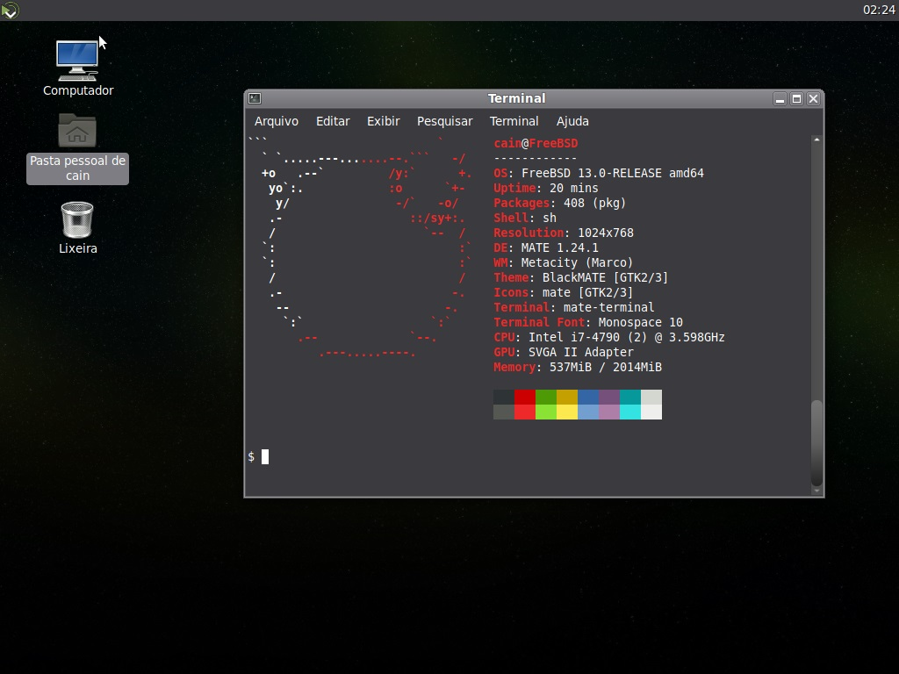
Mas ainda é só o começo...
Existem diversas alterações que ainda podem ser feitas no sistema para melhorar a sua experiência, da instalação dos drivers de vídeo (drm-kmod) até a otimizações nos arquivos /etc/profile, /etc/login.conf, /etc/fstab, /boot/loader.conf, /etc/sysctl.conf, /etc/rc.conf.
Aos poucos postarei mais informações e otimizações, porém, com uma interface gráfica, com conhecimento do pkg install para instalar os aplicativos e sabendo alterar os arquivos do sistema por meio do nano você já tem mais do que o suficiente para começar bem no FreeBSD 😉
Caso queira continuar...
Impressão no FreeBSD
De começo aqui vai um alerta: Impressão no FreeBSD é perfeita DESDE QUE você consiga encontrar o driver correto para a sua impressora, do contŕario as coisas tendem a ser bastante problemáticas (Sim! Ainda que seja impressão por rede!).
Supondo que você deu sorte de ter uma impressora com suporte não é tão complicado assim, basta ter o CUPS instalado e habilitado, o LPD e adicionar a impressoa nas configurações do CUPS. Instale o cups com o comando:
pkg install cups
Agora precisamos configurar o servidor de impressão do CUPS, acesse o diretório /etc/devfs.rules:
nano /etc/devfs.rules
E adicione as linhas abaixo:
[system=10]
add path 'unlpt*' mode 0660 group cups
add path 'ulpt*' mode 0660 group cups
add path 'lpt*' mode 0660 group cups
add path 'usb/X.Y.Z' mode 0660 group cups
Agora precisamos habilitar alguns serviços na inicialização editando o /etc/rc.conf com o comando abaixo:
nano /etc/rc.conf
E adicione as linhas:
cupsd_enable="YES"
devfs_system_ruleset="system"
lpd_enable="YES"
Os serviços serão iniciados durante o boot, você também pode iniciá-los manualmente com os comandos de serviço como service lpd start, service cupsd start e service devfs restart mas o recomendado é que você reinicie o seu sistema e então verifique se os serviços subiram corretamente com o comando:
service lpd status
service cupsd status
Se os serviços subiram sem nenhum problema você pode acessar a página local do CUPS com qualquer navegador acessando o endereço, mas antes precisamos ter o driver da impressora em mãos, para isso você tem 2 alternativas:
Instalar o pacote gutenprint válido para diversos modelos de impressoras:
pkg install gutenprint
OU
Baixar o arquivo PPD no site do fabricante da sua impressora ou buscá-lo no OpenPrinting no link:
https://www.openprinting.org/download/PPD/
Uma vez que você tem o driver necessário, basta seguir para o link do CUPS em:
http://localhost:631/
Na página do CUPS basta acessar a guia Administração, insira o usuário e senha do administrador.
Você pode selecionar Encontrar novas impressoras (para impressoras na sua rede local) ou Adicionar impressora, e por fim selecionar o modelo e driver da sua impressora.
Aqui vão algumas alterações recomendadas:
No arquivo /etc/rc.conf
No arquivo /boot/loader.conf
Carregando sensor de temperatura do processador
Para carregar o módulo automaticamente durante o boot para processadores Intel adicione a linha:
coretemp_load="YES"
Caso você tenha um processador AMD adicione a linha:
amdtemp_load="YES"
Para reduzir o tempo do prompt de autoboot para 3 segundos adicione a linha:
autoboot_delay="3"
Se você especificar a resolução máxima desejada para o console do framebuffer EFI adicione a linha:
efi_max_resolution=1920x1080
Observação: Podem ser usados os valores 480p, 720p, 1080p, 2160p, 4k, 5k ou um valor customizado de larguraxaltura.
Para alterar o tamanho da fonte no menu UEFI
Opcional: Caso você tenha problemas para utilizar o menu do bootloader UEFI devido ao tamanho da fonte você pode configurar de forma persistente determinando o tamanho com o códigos abaixo de baixo:
screen.font="14x28"
Caso queira ver as fontes disponíveis basta usar o comando:
ls -1 /boot/fonts
PF Firewall
O FreeBSD tem alguns serviços que podem ser usados para melhorar a segurança, entre eles o maravilho PF Firewall, este não é exatamente a mesma tecnologia do OpenBSD mas é quase tão boa quanto. Antes de mais nada precisamos criar um conjunto de regras no diretório /etc/pf.conf. Tanto a documentação do FreeBSD quanto a DigitalOcean tem boas documentações iniciais para isso, mas eu vou dar um exemplo (bem quebrado) de ruleset misturando ambas... Pois eu sou desses 😉.
# Declaração de macros
# ssh_ip = "{ 192.168.1.100 }"
tcp_out = "{ 22, 53, 80, 443 }"
udp_out = "{ 53, 68, 123 }"
# Ruleset
set skip on lo0 # ignorar loopback
block all # bloquear por padrão
pass out proto tcp to port $tcp_out # permitir saída SSH, DNS, HTTP
pass out proto udp to port $udp_out # permitir saída DNS, NTP, HTTPS
pass out inet proto icmp icmp-type { echoreq } # permitir requisição de ECHO
# Habilitar SSH
# pass in quick proto tcp from $ssh_ip to port 22 flags S/SA keep state
Pelo amor de tudo que há de sagrado não vá utilizar isso em linha de produção! Isso é apenas um (péssimo) exemplo!
Agora precisamos ativar o firewall, acesse /etc/rc.conf e adicione as linhas:
pf_enable="YES"
pflog_enable="YES"
Com ambos serviços habilitados no boot, reinicie a máquina e carregue o arquivo de regras com o comando abaixo:
pfctl -f /etc/pf.conf
Se não apareceu nenhum erro então já está funcional. Eu recomendo fortemente que você procure regras para o seu caso específico pois nesse ruleset basicamente não há muito suporte ou segurança, isso é apenas um exemplo de argumentos para que você possa iniciar a sua configuração.
Coloquei alguma configuração errada e agora o pc não inicia mais... O que fazer?
Selecione o opção single user durante o boot, logue como root e para poder editar os arquivos utilize os comandos:
fsck -y
mount -u /
mount -a -t ufs
Se e somente se você utiliza swap:
swapon -a
Pronto! agora você pode acessar e corrigir os erros nos arquivos de sistema e continuar de onde parou 😉
Compilação de pacotes com o Poudriere e Synth
Como disse no começo da página, a configuração dos pacotes do FreeBSD pode não ser muito amigável para usuários finais esse é um dos motivos que levam os usuários do FreeBSD a utilizar helpers para compilação dos pacotes em bloco. Existem diversas formas de fazer isso mas nessa documentação trataremos de duas ferramentas: Poudriere e Synth.
Ambos são extremamente configuráveis, porém eles tem objetivos diferentes e usam tecnolgias diferentes, grosso modo, o Poudriere é mais voltado para ambiente business class enquanto o Synth tem uma experiência mais simplificada para o usuário final, via de regra o Synth é mais rápido enquanto o Poudriere tem muito menos dependências.
TMPFS (passo opcional)
O driver TMPFS basicamente gera um sistemas de arquivo in-memory que pode acelerar de sobremaneira o processo de compilação, para carregar o driver durante a inicialização você deve adicionar a linha abaixo em /boot/loader.conf:
tmpfs_load="YES"
Uma vez que o driver está configurado para ser carregado, é necessário editar o arquivo /etc/fstab e adicionar a linha abaixo conforme o diagrama:
# Device
Mountpoint
FStype
Options
Dump
Pass#
tmpfs
/tmp
tmpfs
rw
0
0
Você pode carregar o driver manualmente e remontar o /tmp mas o recomendado é que você reinicie a máquina para que as alterações tenham efeito.
CCache (passo opcional)
O cache de compilação pode aumentar a velocidade de compilação dos pacotes, é uma tecnolgia interessante que ambos helpers podem utilizar, caso queira instalar o Ccache via pkg use o comando:
pkg install ccache
Ou...
Caso queira compilar o pacote, pode fazer isso com o comando abaixo:
cd /usr/ports/devel/ccache
make install clean
Agora precisamos criar uma pasta para o Ccache, por conveniência vamos criar em /var/cache/ccache, para criar esse diretório use o comando:
mkdir /var/cache/ccache
Agora precisamos configurar o ccache para trabalhar com esse diretório, para isso utilize o comando:
ccache --set-config=cache_dir=/var/cache/ccache
Dependendo de quanto espaço em disco você é provável que deseje setar o tamanho máximo do cache, vamos supor que eu deseje setar este valor para 20GB (o valor máximo padrão do Ccache é de 5GB), nesse caso basta utilizar o comando:
ccache --max-size=20G
Criando certificado e chave SSL
Existem diversas formas de gerar chaves e certificados, nessa documentação faremos de uma forma simples apenas para gerar o certificado da página de informações e assinar os pacotes. Primeiramente criaremos os diretórios necessários, para isso utilize o comando:
mkdir -p /usr/local/etc/ssl/{keys,certs}
Agora podemos setar as devidas permissões para que nenhum outro usuário possa interagir com esse diretório:
chmod 0600 /usr/local/etc/ssl/keys
Vamos gerar uma chave de 4096 bit no diretório /usr/local/etc/ssl/keys:
sudo openssl genrsa -out /usr/local/etc/ssl/keys/poudriere.key 4096
E dessa chave geramos um certificado com:
sudo openssl rsa -in /usr/local/etc/ssl/keys/poudriere.key -pubout -out /usr/local/etc/ssl/certs/poudriere.cert
Instalação do Poudriere
Se você escolheu utilizar o Poudriere ao invés do Synth, instale via pkg com o comando:
pkg install poudriere
Ou...
Caso queira compilar o pacote, pode fazer isso com o comando abaixo:
cd /usr/ports/ports-mgmt/poudriere
make install clean
Editando o arquivo de configurações do Poudriere
O arquivo de configurações do Poudriere pode ser encontrado em /usr/local/etc/poudriere.conf, você pode editá-lo com o seu editor de texto preferido, no meu caso utilizarei o nano como no comando abaixo:
nano /usr/local/etc/poudriere.conf
As configurações padrão do Poudriere são bem sãs, porém algumas coisas são interessantes de se alterar, por exemplo:
Se você utilizar UFS ao invés de ZFS, habilite a linha:
NO_ZFS=yesSe você utilizar ZFS ao invés de UFS, desabilite a linha:
#NO_ZFS=yesE especifique as opções de pool e diretório como no exemplo a seguir:
ZPOOL=nomedapool
ZROOTFS=/poudrierePor padrão o arquivo de configuração aponta para um link inválido, altera a linha:
FREEBSD_HOST=_PROTO_://_CHANGE_THIS_Para:
FREEBSD_HOST=ftp://ftp.freebsd.orgCaso você utilize ZFS habilite o argumento abaixo para que o diretório de dados na raiz da pasta do poudriere esta setado corretamente por desencargo de consciência:
POUDRIERE_DATA=${BASEFS}/dataVerifique a linha em que o poudriere vai armazenar jails e ports:
BASEFS=/usr/local/poudrierevocê pode redirecionar para outro lugar (não recomendado) e caso o diretório não existe crie o diretório com o comando:
mkdir /usr/local/poudriereSe você desejar fazer uso do TMPFS habilite a linha:
USE_TMPFS=yesCaso contrário desabilite essa linha.
Se você deseja que o poudriere para reconstrua os pacotes quando as opções para ele forem alteradas habilite a linha:
CHECK_CHANGED_OPTIONS=verboseSe você deseja reconstruir pacotes quando as dependências foram alteradas desde a última compilação habilite a linha:
CHECK_CHANGED_DEPS=yesSe você deseja assinar os pacotes, habilite e informe o caminho da chave na linha:
PKG_REPO_SIGNING_KEY=/usr/local/etc/ssl/keys/poudriere.keySe você desejar fazer uso do Ccache determine o diretório na linha:
CCACHE_DIR=/var/cache/ccacheE logo a seguir insira a linha:
WITH_CCACHE_BUILD=yesPor padrão o Poudriere utiliza hw.ncpu para determinar o número de jobs em paralelo, se você deseja setar um valor específico altere a linha como no exemplo abaixo:
PARALLEL_JOBS=1Se você deseja desativar o suporte a Linux habilite a linha:
NOLINUX=yesVocê pode definir a string com o nome de domínio ou endereço IP onde seu servidor pode ser acessado:
URL_BASE=http://server_domain_or_IP/
Criar ambiente de compilação
Criando Jail
Como foi dito acima o poudriere utiliza um ambiente baseado em jails para "buildar" seus pacotes, então antes de mais nada precisamos criar a jail. No meu caso vou criar uma jail com o nome FreeBSD_14-0_x64, baseado na versão 14.0-RELEASE do FreeBSD e baseado na arquitetura amd64, então nesse caso o comando seria:
poudriere jail -c -j FreeBSD_14-0_x64 -v 14.0-RELEASE -a amd64
O processo pode demorar um pouco, se em algum momento você desejar listar as jails criadas utilize o comando:
poudriere jail -l
Criando árvore de ports
O poudriere precisa de uma árvore de ports para trabalhar, inclusive pode até mesmo trabalhar com diversas árvores, por hora vamos criar uma árvore com o nome MAIN:
poudriere ports -c -p MAIN
Caso deseje listar as árvores criadas utilize o comando:
poudriere ports -l
Criando lista de ports
Agora que temos a jail e árvore de ports, falta definir uma lista de ports que desejamos compilar, crie essa lista em:
/usr/local/etc/poudriere.d/ports-list
Caso queira saber o identificador do pacote desejado você pode utilizar o comando whereis "nomedopacote" como no exemplo abaixo:
whereis gnome-terminal
...E o resultado obtido será:
/usr/ports/x11/gnome-terminal
Então basta inserir a linha x11/gnome-terminal na lista para que ele seja compilado como no exemplo abaixo:
x11/cinnamon
x11/gnome-terminal
www/firefox
Se você deseja listar as opções de compilação de um pacote presente no sistema para ter alguma referência você pode utilizar o comando pkg info "nomedopacote" como no exemplo abaixo:
pkg info gnome-terminal
Que retornará:
Options :
NAUTILUS : on
SEARCHPROVIDER : on
Configurando make.conf
Agora que você já sabe identificar os pacotes podemos criar um arquivo de configuração específico para colocar opções de compilação dessa jail, acesse o diretório com o comando:
cd /usr/local/etc/poudriere.d
*Se o diretório não existir você pode criá-lo com o comando:
mkdir /usr/local/etc/poudriere.d
Uma vez nesse diretório, basta criar um arquivo nome da jail-make.conf:
nano FreeBSD_14-0_x64-make.conf
Caso você queira que PKG seja utilizado (não recomendado) no processo você pode inserir a linha:
WITH_PKGNG=YES
Caso você queira setar para que todos os pacotes nessa jail sejam preparados com suporte a NLS você pode usar o argumento OPTIONS_SET+= como no exemplo abaixo:
OPTIONS_SET+= NLS
Caso você queira setar para que todos os pacotes nessa jail sejam preparados sem suporte a DOCS você pode usar o argumento OPTIONS_UNSET+= como no exemplo abaixo:
OPTIONS_UNSET+= DOCS
O sistema de ports suporta múltiplas opções de fornecimento ou mesmo versionamento para determinado software ou biblioteca (como por exemplo multiplas versões de Python ou múltiplos fornecedores para SSL), vamos supor que desejamos setar a biblioteca LibreSSL como padrão para SSL, podemos fazer isso com o argumento:
DEFAULT_VERSIONS+=ssl=libressl
Você também pode setar configurações específicas de compilação para pacotes, vamos supor que você deseje remover o suporte a ALSA e JACK no pacote www/firefox, basta alterar para que a sintaxe fique como no exemplo abaixo:
www_firefox_UNSET+= ALSA JACK
Configurando o ambiente de compilação por diálogo
Se você quiser editar as opções sem ter de editar manualmente o arquivo de configuração, você pode utilizar o comando poudriere options, eu recomendo fortemente a leitura do manual do poudriere mas aqui vão alguns exemplos mais essenciais:
-c Configura o ambiente do pacote tomando a escolha de configuração por padrão, sempre vai mostrar os diálogos para os ports e suas dependências.
poudriere options -c "nome do pacote"-C Configura o ambiente do pacote tomando a escolha de configuração de forma condicional, que só mostra caixas de diálogo com relação a novas opções fornecidas.
poudriere options -C "nome do pacote"-n Executa o comando de forma não recursiva, útil caso você queira forçar o diálogo de configuração (-c) porém para um port específico sem ter que alterar todas as suas dependências
poudriere options -cn "nome do pacote"-j Define as opções para uma jail específica. Vamos supor que deseja configurar as opções de um único pacote, de forma não recursiva na jail FreeBSD_14-0_x64:
poudriere options -j FreeBSD_14-0_x64 -cn "nome do pacote"-p Roda a configuração dentro da árvore de ports citada. Vamos supor que deseja configurar as opções de um único pacote, de forma não recursiva na jail FreeBSD_14-0_x64 para a árvore MAIN:
poudriere options -j FreeBSD_14-0_x64 -p MAIN -cn "nome do pacote"ALERTA: Se você já tem opções configuradas para a árvore padrão elas não mais serão usadas caso utilize essa opção!
-r Informa ao Poudriere para remover opções especificadas pelo usuário em um pacote de determinada jail. Vamos supor que você deseja retornar a configuração padrão na jail FreeBSD_14-0_x64 o pacote gnome-terminal :
poudriere options -r -j FreeBSD_14-0_x64 x11/gnome-terminal
Compilando pacotes
Para finalmente compilar os pacotes basta utilizar o comando poudriere bulk -j "nome da jail" -p "nome da árvore de ports" -f "arquivo da lista de pacotes" como no exemplo abaixo:
poudriere bulk -j FreeBSD_14-0_x64 -p MAIN -f /usr/local/etc/poudriere.d/ports-list
Se em algum momento do processo de compilação quiser obter informações sobre o progresso pelo terminal basta utilizar CTRL+t.
Configurar o pkg para usar o repositório construído localmente pelo Poudriere
Uma vez que os pacotes estão compilados, eles podem ser utilizados através do comando pkg install, para que o pkg visualize os pacotes gerados pelo poudriere precisamos criar um arquivo de repositório no diretório /usr/local/etc/pkg/repos, então antes de mais nada crie os diretórios com o comando:
mkdir -p /usr/local/etc/pkg/repos
Em seguida acesse e edite o arquivo /usr/local/etc/pkg/repos/poudriere.conf, utilizando de exemplo o nano edite com:
nano /usr/local/etc/pkg/repos/poudriere.conf
Existem diversas configurações que podem ser feitas aqui, a primeira e mais importante é logicamente direcionar o pkg para onde estão os pacotes, para isso adicione a linha poudriere:{url: "localização do diretório+nome da jail+nome da árvore de pacotes"} como no exemplo abaixo:
poudriere: {
url: "file:///usr/local/poudriere/data/packages/FreeBSD_14-0_x64-MAIN",
}
Podemos adicionar uma linha para definir que este é um servidor mirror de pacotes com a linha mirror_type: "srv" e que ele deve estar habilitado com a linha enabled: yes, sendo assim o arquivo ficaria:
poudriere: {
url: "file:///usr/local/poudriere/data/packages/FreeBSD_14-0_x64-MAIN",
mirror_type: "srv",
enabled: yes
}
Caso você deseje utilizar este reposítório para seletos pacotes e em conjunto com o repositório oficial (não recomendado), você pode adicionar uma configuração que priorize esse repositório com a linha priority: 100 como no exemplo abaixo:
poudriere: {
url: "file:///usr/local/poudriere/data/packages/FreeBSD_14-0_x64-MAIN",
mirror_type: "srv",
enabled: yes,
priority: 100
}
Caso você tenha gerado o certificado e configurado a assinatura de pacotes você pode adicionar os argumentos da linha abaixo para o tipo de assinatura verificada e o caminho para a chave pública para verificar a assinatura dos pacotes:
poudriere: {
...
signature_type: "pubkey",
pubkey: "/usr/local/etc/ssl/certs/poudriere.cert",
...
}
Caso você deseje desabilitar o repositório padrão você pode criar um arquivo de configuração em /usr/local/etc/pkg/repos/freebsd.conf contendo o argumento enabled: no como no exemplo abaixo:
FreeBSD: {
enabled: no
}
Uma vez que a sua configuração de repositórios está finalizada, atualize a lista de pacotes com o comando:
pkg update
Você pode usar um script simples para alternar qual repositório está habilitado:
#!/usr/local/bin/bash
# Caminho dos arquivos de configuração
POUDRIERE_REPO="/usr/local/etc/pkg/repos/poudriere.conf"
FREEBSD_REPO="/usr/local/etc/pkg/repos/freebsd.conf"
# Verifica se o repositório do Poudriere está habilitado
if grep -q 'enabled: yes' $POUDRIERE_CONF; then
# Se estiver habilitado, desabilita o Poudriere e habilita o FreeBSD
sed -i '' 's/enabled: yes/enabled: no/g' $POUDRIERE_REPO
sed -i '' 's/enabled: no/enabled: yes/g' $FREEBSD_REPO
else
# Se estiver desabilitado, habilita o Poudriere e desabilita o FreeBSD
sed -i '' 's/enabled: no/enabled: yes/g' $POUDRIERE_REPO
sed -i '' 's/enabled: yes/enabled: no/g' $FREEBSD_REPO
fi
Manutenção básica das jails e árvores
Aqui vão alguns comandos para você usar de referência para utilizar na sua manutenção do sistema:
Caso você queira deletar uma jail e todas as suas pastas de dados você pode utilizar o comando poudriere jails -d -C all -j "nome da jail":
poudriere jails -d -C all -j FreeBSD_14-0_x64Caso você queira atualizar uma jail você pode utilizar o comando poudriere jail -u -j "nome da jail":
poudriere jail -u -j FreeBSD_14-0_x64Caso você queira atualizar uma árvore de ports pode utilizar o comando poudriere ports -u -p "nome da árvore de ports":
poudriere ports -u -p MAINCaso você queira deletar sem questionamentos todos os distfiles relacionados a uma árvore utilize o comando poudriere distclean -a -p "nome da árvore" -y:
poudriere distclean -a -p MAIN -yCaso você queira limpar sem questionamentos todos os logfiles relacionados a uma jail utilize o comando poudriere logclean -a -j "nome da jail" -y :
poudriere logclean -a -j FreeBSD_14-0_x64 -yCaso você queira limpar sem questionamentos todos os logfiles relacionados a uma árvore de ports utilize o comando poudriere logclean -a -p "nome da árvore" -y :
poudriere logclean -a -p MAIN -yCaso você deseje remover todos os pacotes associados a uma jail você pode utilzar o comando poudriere pkgclean -a -j "nome da jail":
poudriere pkgclean -a -j FreeBSD_14-0_x64Caso você deseje deletar os pacotes compilados porém não mais necessários (cleanup) utilize o comando poudriere pkgclean -j "nome da jail" -p "nome da árvore" -f "caminho do arquivo de lista de ports" :
poudriere pkgclean -j FreeBSD_14-0_x64 -p MAIN -f /usr/local/etc/poudriere.d/ports-list
Configurar página de rede
Utilizando o Nginx
Instale o Nginx compilando do seu diretório com os comandos:
cd cd /usr/ports/www/nginx
make install clean
OU instale através do binário com o comando:
pkg install nginx
Agora copie o arquivo de exemplo do Poudreire para o Nginx para o diretório do Nginx no seu computador:
curl -fsSL https://raw.githubusercontent.com/freebsd/poudriere/master/src/share/examples/poudriere/nginx.conf.sample > /usr/local/etc/nginx/nginx.conf
Para iniciar o serviço do nginx ao iniciar o computador acrescente a linha abaixo em /etc/rc.conf:
nginx_enable="YES"
Caso queira iniciar o serviço imediatamente utilize o comando:
doas service nginx onestart
Instalação do Synth
Se você escolheu utilizar o Synth ao invés do Poudriere, instale via pkg com o comando:
pkg install synth
Ou...
Caso queira compilar o pacote, pode fazer isso com o comando abaixo:
cd /usr/ports/ports-mgmt/synth
make install clean
O primeiro passo é instalar serviço OpenBSDHTTPD
pkg install obhttpd
Ou...
Caso queira compilar o pacote, pode fazer isso com o comando abaixo:
cd /usr/ports/www/obhttpd
make install clean
Habilite o serviço do OpenBSDHTTPD na inicialização a linha abaixo no arquivo
obhttpd_enable="YES"
Dualboot com Linux (SystemD boot)
Na versão anterior dessa documentação eu tinha dito que ainda não era interessante a instalação utilizando UEFI... Agora não só é funcional como é o recomendado! Para fazer o dualboot basta selecionar o dispositivo de instalação, criar uma partição UFS em um disco que já tenha partição ESP e inserir a seguinte configuração nas entries do systemd boot:
title FreeBSD
efi /EFI/freebsd/loader.efi
* Se o seu loader está em outra localização, basta alterar o caminho que vai dar tudo certo 😉